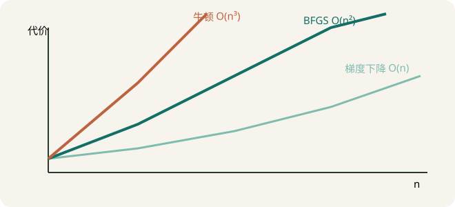

6.1.2 BFGS 的实现：算法 6.1、初始缩放与代价
6.1.1 给出了 BFGS 的更新公式。要把公式变成可靠的算法，还要决定初始矩阵 H₀、线搜索条件、以及当曲率条件失败时如何处理。本页把这些工程细节组装成算法 6.1，并在 Rosenbrock 函数上核对收敛。
算法 6.1 主循环
BFGS 的整体结构与任何线搜索方法一样：在当前点求梯度、构造下降方向、做线搜索定步长、更新近似矩阵。区别只在最后一步——用 6.1.1 的秩二更新代替重新计算 Hessian。
- 给定起点 x₀、初始对称正定矩阵 B₀（或 H₀=B₀⁻¹）与终止容差 ε。
- 计算 gₖ=∇f(xₖ)；若 ‖gₖ‖≤ε 则停止。
- 求解 Bₖpₖ=−gₖ，等价于 pₖ=−Hₖgₖ。
- 沿线 xₖ+αpₖ 做线搜索，得到满足 Wolfe 条件的 αₖ，令 sₖ=αₖpₖ，xₖ₊₁=xₖ+sₖ。
- 计算 yₖ=gₖ₊₁−gₖ；若 sₖᵀyₖ 足够正，用 BFGS 公式更新 Hₖ₊₁；否则跳过或阻尼更新。
- 令 k←k+1，回到第 2 步。
首轮循环里 H₀ 尚未包含任何曲率信息；后续循环才逐步把观测到的 s,y 对注入矩阵。每一步的搜索方向 pₖ=−Hₖgₖ 自动是一个下降方向，因为 gₖᵀpₖ=−gₖᵀHₖgₖ<0（Hₖ 正定）。
初始矩阵的缩放
H₀=I 等于假设目标函数的曲率是 1。若目标函数的尺度不同（例如 f=10⁶·g），第一步就会走错幅度。常用的办法是先做一次最速下降步，用它估计平均曲率并取 H₀=γI：
这里 s₀,y₀ 来自第一步。商 s₀ᵀy₀/y₀ᵀy₀ 是沿初始方向的一个 Rayleigh 商式估计：它在方向上把曲率投影成标量。因为 λ_min≤(sᵀ∇²f s)/(sᵀs)≤λ_max，这个 γ 至少保证 H₀ 正定且量纲正确。
注意 γ 只改变“秤的刻度”，不改变方向 p₀=−H₀g₀ 的朝向（仍然是 −g₀）。它真正影响的是后续几步的更新次序与数值条件。在正定二次问题上，无论 γ 取多少，精确线搜索下 BFGS 仍在 n 步内终止；γ 的价值主要体现在非线性问题上。
线搜索与曲率保护
BFGS 保正定性依赖 sₖᵀyₖ>0。若线搜索只满足 Armijo 充分下降，sₖᵀyₖ 可能为负，此时 BFGS 公式的分母出错、矩阵可能变不定。因此实现通常要求线搜索满足弱 Wolfe 条件：
典型常数 c₁=10⁻⁴、c₂=0.9（牛顿-共轭梯度法用 c₂=0.1）。第二条件直接给出 sₖᵀyₖ=(gₖ₊₁−gₖ)ᵀsₖ≥(c₂−1)gₖᵀsₖ>0。即便满足 Wolfe 条件，若函数高度非线性或线搜索容差过松，sₖᵀyₖ 仍可能很小；工程实现会在 sₖᵀyₖ≤ε_machine‖sₖ‖‖yₖ‖ 时跳过更新（保持 Hₖ），或对 yₖ 做阻尼后再更新。这些属于数值稳定的工程选择，不是定理结论。
存储与计算代价
BFGS 维护完整的 n×n 稠密逆近似 Hₖ，因此每步要把 Hₖ 更新为秩二的 Hₖ₊₁，主要代价是两次矩阵-向量乘法（各 O(n²)）；搜索方向 pₖ=−Hₖgₖ 也是 O(n²)。存储是 n²/2 个浮点数（对称）。
相比之下，牛顿法每步需要 O(n³) 的线性代数；梯度下降每步只要 O(n) 但与曲率无关。BFGS 用 O(n²) 的每步代价换取了接近牛顿法的收敛速度，代价是内存随 n² 增长。这是大规模问题转向 L-BFGS（第七章）的直接原因：只保留最近 m 对 (s,y)。

非线性可复现算例
取二维 Rosenbrock 函数 f(x,y)=100(y−x²)²+(1−x)²，它在 (1,1) 处取零最小值，谷底弯曲、条件数随迭代变化。用算法 6.1、H₀=I、沿搜索方向做一维精确线搜索（黄金分割），从 x₀=(−1.2,1) 出发。
首步 f=24.2、‖g‖≈2.33×10²；经过 14 步到达 f≈4.6×10⁻¹⁹、‖g‖≈2.5×10⁻⁸，已落在机器精度附近。(1,1) 处的谷底方向变化剧烈，因此迭代数远多于二次问题；这里所有数字由本页 Python 程序独立运行得到，属教学算例，不是性能基准。
Rosenbrock 函数的最小值位于一条弯曲的抛物线谷底。BFGS 的迭代点从谷底一端摆到另一端，逐步靠近 (1,1)；初期的步长很大，后期在谷底内精细调整。
交互：逐步回放 BFGS 轨迹
拖动滑块选择迭代序号 k，查看对应的 xₖ、f(xₖ)、‖gₖ‖ 以及该步的曲率值 sₖ₋₁ᵀyₖ₋₁。轨迹由页面内实时运行的 BFGS（精确线搜索）生成，与 Python 程序一致。
实时迭代轨迹
Python：算法 6.1 的可运行实现
程序只依赖标准库。它实现算法 6.1（含初始缩放、精确线搜索与曲率保护），在 Rosenbrock 上运行，并断言最终 ‖g‖<10⁻⁶（即收敛到谷底）。
"""BFGS (Algorithm 6.1) on the 2-D Rosenbrock function."""
import math
def f(p):
return 100.0*(p[1]-p[0]**2)**2 + (1.0-p[0])**2
def grad(p):
return (-400.0*p[0]*(p[1]-p[0]**2) - 2.0*(1.0-p[0]),
200.0*(p[1]-p[0]**2))
def exact_search(x, p):
# golden-section minimiser of phi(a)=f(x+a p) on [0, 2]
lo, hi = 0.0, 2.0
gr = (math.sqrt(5.0)-1.0)/2.0
c, d = hi-gr*(hi-lo), lo+gr*(hi-lo)
fc, fd = f((x[0]+c*p[0], x[1]+c*p[1])), f((x[0]+d*p[0], x[1]+d*p[1]))
for _ in range(80):
if fc < fd:
hi, d, fd = d, c, fc
c = hi-gr*(hi-lo); fc = f((x[0]+c*p[0], x[1]+c*p[1]))
else:
lo, c, fc = c, d, fd
d = lo+gr*(hi-lo); fd = f((x[0]+d*p[0], x[1]+d*p[1]))
return 0.5*(lo+hi)
def bfgs(x0, tol=1e-6, maxit=200):
n = len(x0); x = list(x0)
H = [[1.0 if i == j else 0.0 for j in range(n)] for i in range(n)]
for it in range(1, maxit+1):
g = grad(x)
if math.hypot(*g) < tol:
return it-1, x
Hg = [sum(H[i][j]*g[j] for j in range(n)) for i in range(n)]
p = [-v for v in Hg]
a = exact_search(x, p)
xn = [x[i]+a*p[i] for i in range(n)]
gn = grad(xn)
s = [xn[i]-x[i] for i in range(n)]
y = [gn[i]-g[i] for i in range(n)]
sy = sum(s[i]*y[i] for i in range(n))
if sy > 1e-12: # curvature safeguard
rho = 1.0/sy
Hy = [sum(H[i][j]*y[j] for j in range(n)) for i in range(n)]
yHy = sum(y[i]*Hy[i] for i in range(n))
H = [[H[i][j] - rho*(s[i]*Hy[j] + Hy[i]*s[j])
+ rho*rho*yHy*s[i]*s[j] + rho*s[i]*s[j]
for j in range(n)] for i in range(n)]
x = xn
return maxit, x
if __name__ == "__main__":
it, x = bfgs([-1.2, 1.0])
assert math.hypot(*grad(x)) < 1e-6
print("iterations =", it, "x =", x, "f =", f(x))程序只处理一个二维函数；它用 80 次黄金分割迭代代替真正的 Wolfe 线搜索（所以不覆盖不精确线搜索与浮点失效），也不是通用拟牛顿求解器。